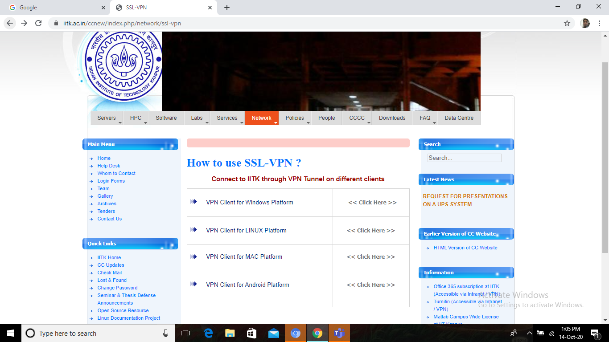
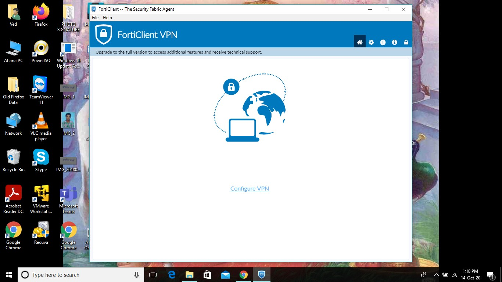
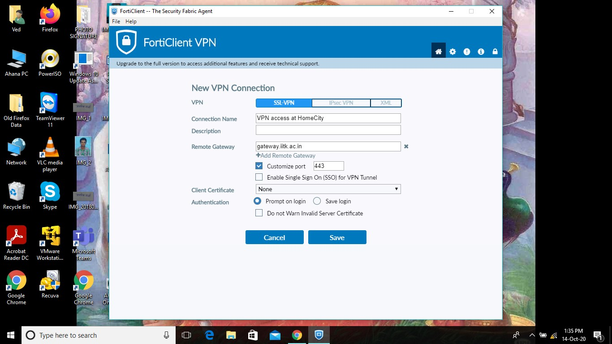
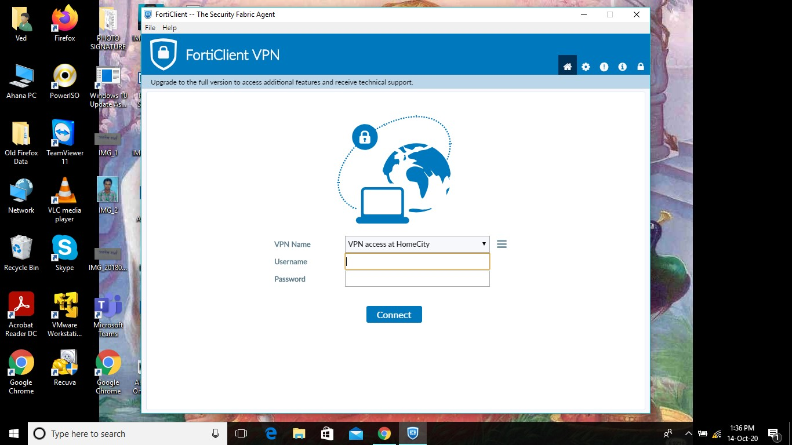
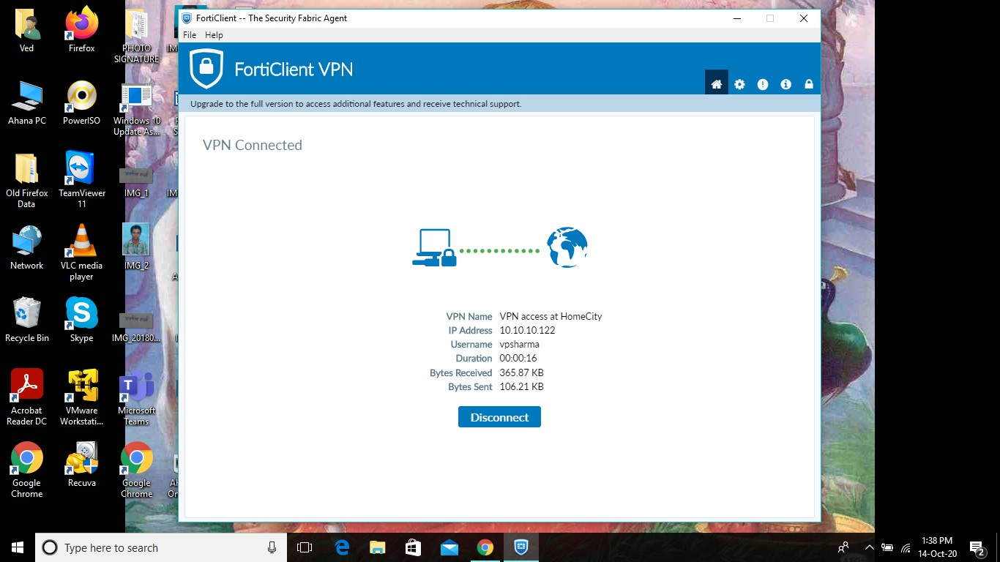
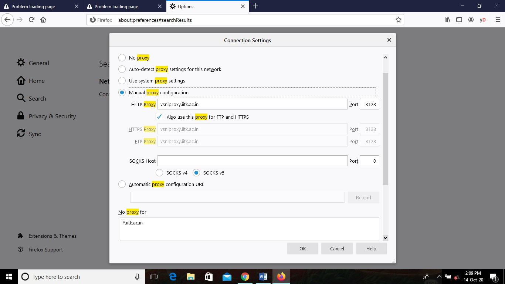
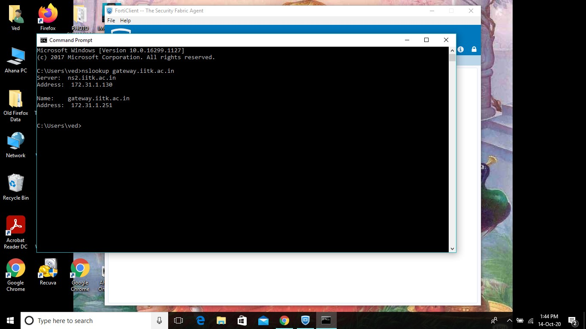

How to Access IITK VPN network from outside of the Campus
Use VPN for windows system:
To download VPN, use this link-
https://www.iitk.ac.in/ccnew/index.php/network/ssl-vpn

select VPN Client for Windows Plateform and Click
select for <<32-Bit>> or <<64-Bit>>
Download file
Double click on .exe file, run it and install SSL VPN.
(Note: Before installing VPN, turn off system fire wall and anti-virus settings.)
Open Start menu and click on FortiClient SSL VPN, get a new window

Click on Configure VPN
Give a connection name (According to your choice – give any name)
Fill gateway.iitk.ac.in in the column of remote gateway,
Select Customize port and fill port no. 443

Select Save and you will get following window.

Fill IITK user name and Password, click on connect, wait

Now Computer System is connected to IITK network as a LAN.
You can access all local resources (telnet, ssh, ftp, browse any local server)
To access library online journals,
Open web browser (Mozilla Firefox Is preferred) and set proxy address and port.
Following this-

(Note: 1. some browsers may have cached any page by accident, then delete browsing history of the web browser.
2. For Windows users- set No Proxy in windows internet explorer.)
Use Command “nslookup gateway.iitk.ac.in” in Command Prompt to check connection.
Output should look like-
Server: ns2.iitk.ac.in
Address: 172.31.1.130
Name: gateway.iitk.ac.in
Address: 172.31.1.251

Please Give Feedback.